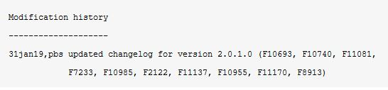
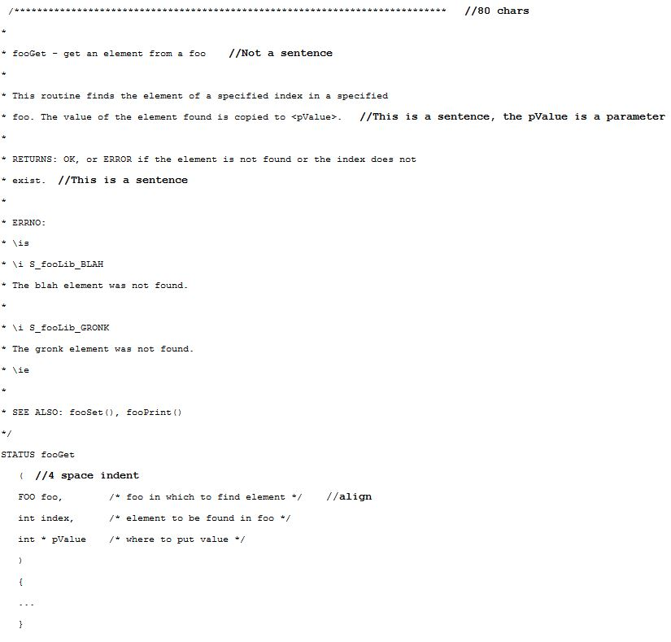
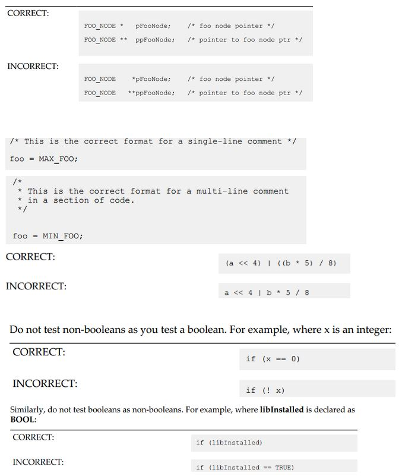
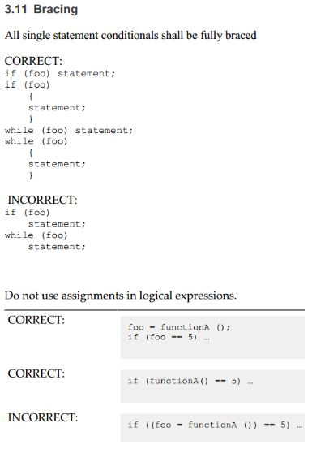
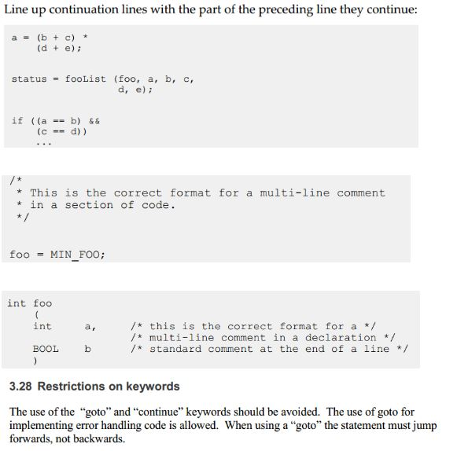

Code Review Checklist Guidelines¶
Documentation¶
Spelling check before review and at the final stage of review, you may use word or outlook(F5)
There’s no target.ref for BSP now, please submit defect to infoDev team to update README.md and BSP supplement guide: VxWorks BSP Documentation Update Process (from SR0610)
For drivers, add “DOC_FILES += xxx.c” out of the “ifdef _WRS_CONFIG_FDT” so that driver API can be automatically produced, references
Coverity & Warnings¶
Make sure there’s no Coverity issues before integration, see: How to Run Coverity for VxWorks 7 Before Running CI Launcher
Make sure there’s no new compile warnings generated. The CI Launcher result will see if there are warnings: <http://vxjenkins.wrs.com:8080/job/vx7_CI_launcher/
Modification History and Change Log¶
copyright year: any of the following entries are considered valid: “1997”, “1992-2003”, “2012-2013” “1997, 2001”, or “1997, 2002-2005”.
13mar17,npc fixed calculation of fifo len for errata: AR#61664 (V7PRO-3645) //<past tense>, no Period, Defect number or Epic number
“add a modification history entry for each and every change to a .spec file that describes the specific changes to the file itself”, that means, each time when you updating spec files due to changelog, please also add a modhis.
Whenever any file is updated in an RPM (layer), please check if the spec/layer version needs updated, methods: How to check if an RPM version needs to be updated when code check in?
If a defect needs to be published, add changelog items with defect number. Otherwise, do not add defect number, but changelog still needs update.
For code committed to git, commit messages should always contain a reference to the defect ID, feature ID or user story ID as well, and “git squash” and/or “git rebase” should be used to minimize the number of commits where possible, see: Vx7 Git Check-in Process
For .spec files, in order to prevent redundant entries pertaining to “%changelog” (see section 3.2.4.2) related updates, a single modification history entry can be used to summarize the various additions to the “changelog” for a given release. The date for the modification history entry shall be the date of the last addition to the %changelog section, and the trigram shall be of the engineer that made the last addition to the %changelog.

New entries go at the top, i.e. changelog should grow up (just like the “Modification history” section
Generic Issues¶
File is UNIX format
Do not put more than one declaration on a line. Each variable and function argument must be declared on a separate line.
Do not use comma-separated lists to declare multiple identifiers.




BSP and Driver¶
The driver component name must be DRV_TYPE_FDT_VENDOR_(IPNAME maybe optional)_(PROCESSORNAME optional)
Example: DRV_TIMER_FDT_KINETIS, DRV_DMA_FDT_FSL_EDMA, DRV_PINMUX_FDT_RZN1
The driver name must be vxbFdtVendorProcessorType
Example: vxbFdtRsRzn1Rtc, vxbFdtFslImxClk, vxbFdtFslImxEcspi, vxbFdtZynqI2c
The driver compatible must align with Linux DTS from vendor or mainline for any new driver or BSP.
Example: “fsl,imx-gpio”, “fsl,p2020-booke-timer”; “xlnx,nwl-pcie”; “snps,designware-gpio”;
The driver vxbus name in VXB_DRV must use similar of the compatible name, except the “vendor,” so that vxbDevShow will have consistent output:
“rzn1-rtc”, “imx-gpio”
Change Log¶
Date |
Change Request ID |
Version |
Change By |
Description |
06/19/2020 |
N/A |
0.1 |
Shree Vidya Jayaraman |
Transferred content from Code Review Checklist Jive page |
08/20/2020 |
N/A |
0.2 |
Shree Vidya Jayaraman |
Updates based on Shawn’s feedback |